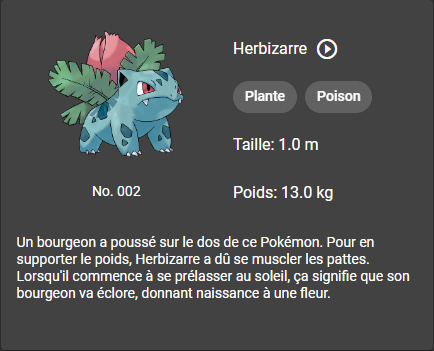

Web services & développement web
https://bisonfoutu.github.io/ng-reveal
Version "PDF"Mais il est qui lui ?


OK cool, mais on fait quoi ?
Au programme:


Angular
Liens utiles
Angular in a nutshell
- TypeScript, ES6+, rxjs
- Build: configuration simplifiée, serveur de développement, build incrémental
- Routing: lazy-loading, code-splitting
- Formulaires: deux solutions intégrées incluant un moteur de validation
- Styling: support natif de Sass, Scss et Less, encapsulation du CSS
- Dependency injection, tree-shaking -> optimisation du bundle de production
- Testing: suite de test intégrée (unit + e2e), utilitaires pour faciliter leur écriture
- Full-featured CLI: génération de projet, de composants, upgrade de version
TP n°1 - Tour of Star Wars Heroes
Angular CLI
Documentation:
ng helpOU
TP n°2 - Pokédex
Préparation du projet
Les points 1 et 2 sont facultatifs, si vous avez déjà installé votre environnement pour le tutoriel vous pouvez les passer.
- Installer NodeJS et npm sur le poste -> https://nodejs.org/fr/ en LTS
- Dans la console, exécuter:
npm install -g @angular/cli - Puis exécuter
ng new <nom_du_projet> --style scss --routing - Installer Angular Material:
ng add @angular/material - Le CLI devrait vous demander de choisir un thème. Choisissez un des deux thèmes sombres, Pink/Blue Grey ou Purple/Green, puis acceptez les 2 questions suivantes.
- Ouvrir le répertoire du projet dans un IDE, puis dans la console, exécuter
npm start -- -o
Lister les Pokémons - Récupération
- Créer un module pokemons
- Créer un component pokemon-list dans ce module
- Créer un service pokemon dans ce module pour récupérer la liste des Pokémons via l'API
-
Notre Pokédex ne concernera que la première génération, soit les 151 premiers Pokémons.
La route permettant de récupérer tous les Pokémons est paginée.
Dans un premier temps, vous n'afficherez donc qu'une partie des pokémons du Pokédex (Plus tard dans le TP, on utilisera une librairie pour gérer le scroll infini).
Créer au sein du service pokemon une méthode getPokemons qui récupère la liste des Pokémons.
Lister les Pokémons - Modèle de données
Vous aurez peut-être remarqué que l'API ne renvoie pas un tableau, mais un objet comportant plusieurs propriétés, dont un tableau de pokémons.
Vous ne pouvez donc pas typer le retour de votre méthode de service en tableau de Pokémon.
Utilisez le modèle suivant pour typer la méthode getPokemons:
export interface PagedData<T> {
data: T[];
limit: number;
offset: number;
}
Ce modèle s'utilise de la manière suivante:
getPokemons(): Observable<PagedData<Pokemon>>Lister les Pokémons - Affichage
- La liste des Pokémons contiendra pour chaque élément son numéro, son nom et l'image de son sprite
- Les sprites sont disponibles dans une archive sur Moodle. L'archive contient également des images et des fichiers audio, qu'on utilisera pour la fiche détaillée. Décompressez cette archive dans src/assets.
- On utilisera le component MatList d'Angular Material pour créer une liste d'items avec avatar (voir format ci-dessous)
Informations d'un Pokémon - Routing
- En cliquant sur un Pokémon dans la liste, on souhaite accéder à sa fiche détaillée
- Créer un component pokemon-detail dans le module pokemons
- Ajouter une route dans le module de routing du module pokemons vers ce component
- Ajouter l'attribut routerLink sur chaque ligne de pokémon dans le component MatListItem pour intégrer le lien vers le détail
Informations d'un Pokémon - Récupération
- A partir du numéro du Pokémon, on va pouvoir récupérer plus d'informations à son sujet
- Ajouter une méthode dans le service pokemon pour récupérer les informations d'un Pokémon depuis l'API
- Dans le component pokemon-detail, récupérer le numéro du Pokémon à partir de l'ActivatedRoute pour pouvoir l'utiliser comme paramètre de la méthode créée précédemment
Informations d'un Pokémon - Affichage
- On souhaite afficher les informations de base d'une fiche de Pokémon classique
- Les components à utiliser pour présenter la fiche sont MatCard, MatGridList, MatList, MatChipList
- Côté format, le numéro sera toujours à afficher en 3 chiffres, et les poids et taille avec une décimale (via le DecimalPipe).
- On souhaite également, comme dans un vrai Pokédex, jouer le cri du Pokémon lorsqu'on accède à sa page, et pouvoir le réécouter via un bouton. On utilisera pour ce faire la balise audio d'HTML5, avec l'option autoplay, et on ajoutera un MatIconButton pour pouvoir rejouer le cri du Pokémon.
-
La fiche du Pokémon sera organisée comme sur l'image ci-dessous:

Si quand j'avance tu recules...
Nous avons désormais une application qui possède 2 pages, une liste et un détail.
On peut accéder au détail depuis la liste, mais on aimerait aussi pouvoir revenir à la liste !
- Ajouter un bouton dans le component pokemon-detail pour permettre le retour à la liste des Pokémons
Vers l'infini et au-delà !
On sait désormais afficher la liste des pokémons et leurs fiches, mais on n'en affiche que 10.
Vous vous rappelez que j'avais dit qu'on ferait du scroll infini ? C'est maintenant !
- Installer ngx-infinite-scroll
- Importer l'InfiniteScrollModule dans le PokemonsModule
- Ajouter l'attribut infiniteScroll et l'évènement (scrolled) sur le tag de la MatNavList
- Créer une méthode onScroll qui sera exécutée par l'évènement (scrolled)
Ca y est, c'est terminé !
Enfin pas vraiment... Mais c'est déjà un début.
Avant de passer à la suite, vérifiez bien que le projet correspond aux attentes, notamment en termes de visuel. (on est pas au pixel près, mais a minima que les pages soient organisées comme dans les exemples)
Pour me rendre vos travaux, vous pouvez héberger vos sources sur Git et m'en donner l'accès
Une fois que c'est fait, vous pourrez faire une nouvelle branche pour la suite.
TP n°3 - Pokédex(suite)
On réorganise tout !
On a vu la navigation, c'est une bonne chose... mais on n'a pas vraiment assez de contenu pour que chaque page occupe toute la place sur l'écran.
Du coup, on va changer un peu l'organisation !
- Créer un nouveau component pokedex dans le module pokemons
- A l'aide du component MatSidenav, et des components pokemon-list et pokemon-detail, créer une vue en deux colonnes, avec la liste à gauche et le détail à droite
- On souhaite bien entendu que le "menu" reste affiché en permanence, il faudra donc ajouter les bons attributs pour ce faire.
Section de recherches
On a beau n'avoir que 151 Pokémons à parcourir, on n'a pas toujours envie de scroller la liste jusqu'en bas, d'autant que ça fait télécharger des données inutilement (même si l'API gère très bien son cache :-) ).
Pour régler le problème, on va ajouter un champ de recherche !
- Dans le component pokemon-list, ajouter un champ de recherche au-dessus de la liste
- Utiliser les éléments mis à disposition par Angular Material pour styliser le champ
-
On devra pouvoir rechercher dans la liste soit par nom, soit par numéro
L'API implémesnte un paramètre dédié à la recherche, un exemple est donné dans la collection Postman.
Encore un petit effort...
Si vous avez terminé, comme pour le TP n°2, vous pouvez pousser votre code sur votre repo Git.
TP n°4 - Pokédex (suite et fin)
Mon équipe de Pokémons
Pour cette section, le choix d'intégration visuelle est libre.
Maintenant qu'on maîtrise bien l'affichage de données, il est temps de jouer avec.
L'étape logique suivante est de créer son équipe de Pokémons... Et c'est là que ça se corse.
Partant du principe qu'on ne doit jamais faire confiance à ses utilisateurs, l'API que j'ai développée impose une connexion pour utiliser les routes liées son équipe.
Il faut donc commencer par se créer un compte avec son email.
Connexion
Concernant la connexion, deux options s'offrent à vous:
- Créer un formulaire de connexion, qui permettrait en théorie de se connecter avec n'importe quel compte
- Faire l'appel de connexion à l'init du TeamComponent, ce qui implique de renseigner vos identifiant et mot de passe dans le code source, ou un peu mieux, dans le fichier de configuration environment.
Récupération de mon équipe
- Deux routes sont disponibles pour la ressource Team: une en GET, et une en PUT
- Tant que vous n'avez pas créé votre équipe, la route GET vous renvoie un tableau vide.
- La route PUT gère à la fois la création et la modification, puisqu'on sait déjà qu'on va créer une équipe correspondant à l'utilisateur connecté.
- Ces routes nécessitent d'être connecté puisqu'elles sont liées à l'utilisateur courant.
- Il faut donc passer lors de l'appel un header Authorization qui aura pour valeur 'Bearer ' suivi de l'access_token récupéré lors du login.
Affichage de mon équipe
Pour cette étape, vous pouvez créer votre équipe directement via Postman pour déjà avoir des Pokémons à afficher.
- Vous pouvez constater que l'équipe gérée par l'API n'est constituée que du tableau des ids des pokémons correspondants.
- Il va donc falloir récupérer les détails de ces pokémons à partir des ids concernés.
- La méthode attendue consiste à créer un tableau d'observables (autant d'appels au service que d'ids) et à utiliser la méthode forkJoin() de rxjs et d'y subscribe pour les récupérer tous en même temps.
Modification de mon équipe
- Le body attendu pour la création/modification d'équipe est le même que celui renvoyé par l'API: un tableau d'ids
- Pas de consigne spécifique concernant le format du formulaire d'ajout/suppression de pokémons.
- A titre personnel, j'ai réutilisé la partie de gauche de l'application, séparant la liste en 2 onglets via les tabs d'Angular Material.
- Attention à gérer la contrainte de taille de l'équipe, qui peut contenir 6 pokémons maximum. L'API gère cette limite et vous renverra une erreur si la taille est supérieure à 6.